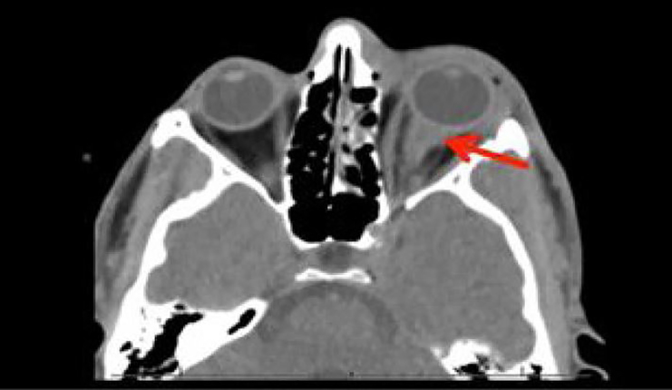
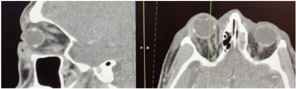
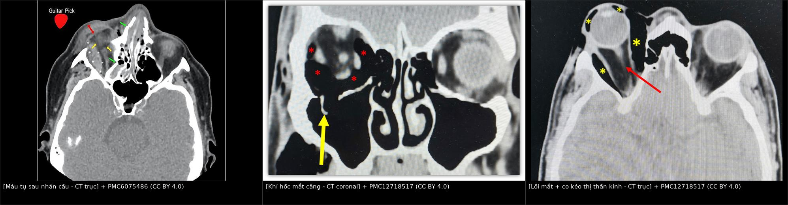
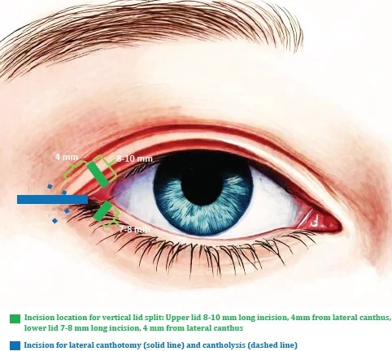
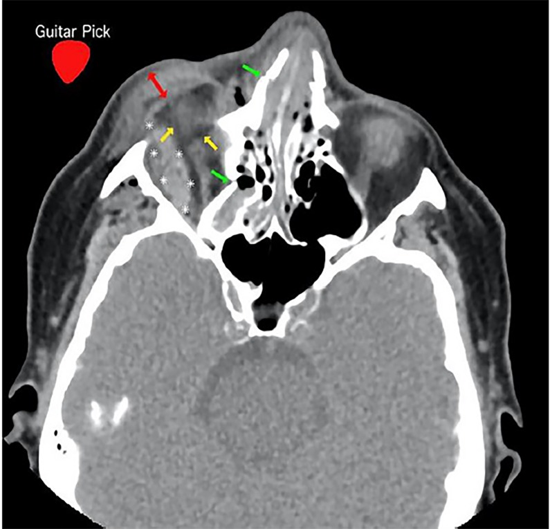
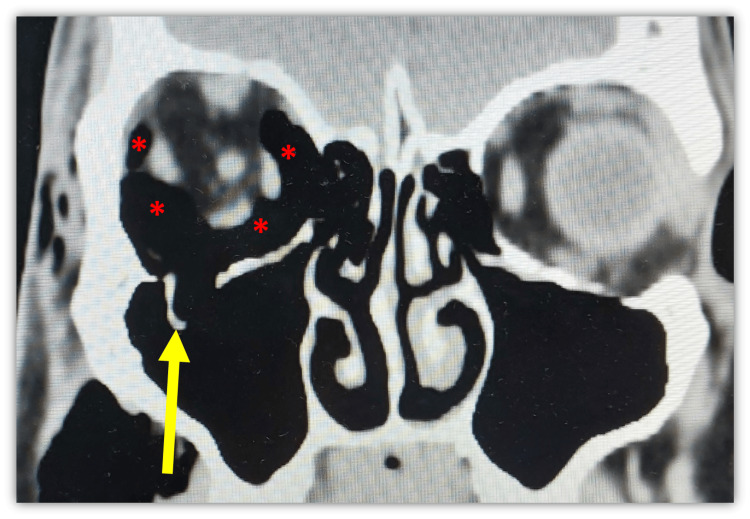
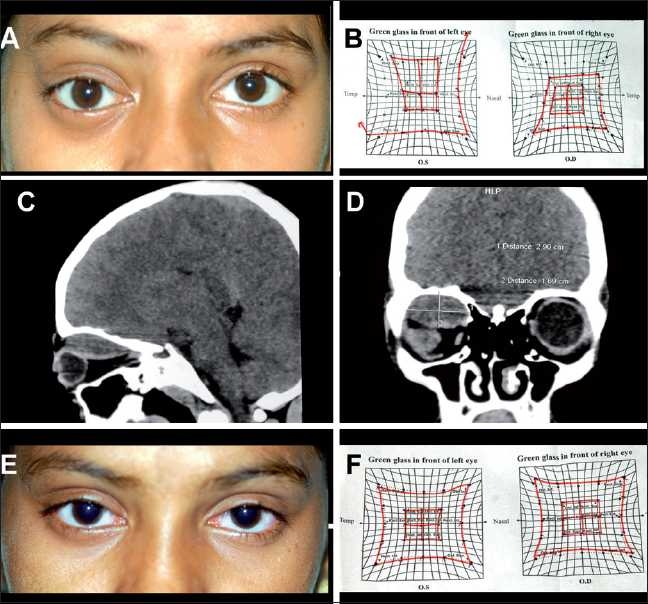

1510 — Hội chứng khoang hốc mắt cấp: hốc mắt căng làm mù trong 90–120 phút — chẩn đoán bằng tay, chẩn đoán phân biệt bằng CT / Acute orbital compartment syndrome (OCS)
Tags: pattern:hoc-mat-cang pattern:loi-mat pattern:mau-tu pattern:khi-mo-mem vung:hoc-mat vung:mat vung:non-co vung:dinh-hoc-mat anatomy:thanh-o-mat protocol:CT-1mm protocol:sieu-am-hoc-mat protocol:MRI-hoc-mat score:khong incidentaloma:khong
Mức chắc chắn (certainty): tổng hợp y văn (literature synthesis) — ghép bài tổng quan đo áp lực hốc mắt (Diagnostics 2022 — PMC9221953, CC BY 4.0), nghiên cứu 29 ca OCS có định lượng CT (AJNR 2023 — PMC10171392, đọc số liệu), tổng quan hệ thống OCS ở trẻ 126 ca (Children 2026 — PMC13511678, CC BY 4.0), đoàn hệ 52 ca máu tụ sau nhãn cầu (Eur J Trauma Emerg Surg 2026 — PMC13486133, CC BY 4.0), 74 mắt canthotomy (Am J Emerg Med 2023 — PMID 37290250, đọc abstract), 28 ca giải ép xương (J Clin Med 2025 — PMC12112626, CC BY 4.0), mô hình lợn ngẫu nhiên (Eur J Anaesthesiol Intensive Care 2025 — PMC12513446, đọc số liệu), cùng 5 ca nguyên văn dùng cho quiz. Nhóm không có bệnh nhân của mình; chỗ suy luận ghi [suy luận].
Vị trí trong thư viện: 420 phủ vỡ sàn hốc mắt và chỉ dành một hàng cho hội chứng khoang; 1506 phủ dị vật (có ca gây OCS); 449 phủ vỡ nhãn cầu; 1501 phủ chấn thương dây thị; 1461 phủ áp-xe dưới màng xương hốc mắt; 3105 phủ tràn khí hốc mắt. Bài này trả lời mặt còn trống: cùng một hội chứng, nhiều nguyên nhân — khi nào chẩn đoán bằng lâm sàng mà KHÔNG chờ CT, ngưỡng áp lực nào là thật, cửa sổ thời gian bao lâu, và canthotomy thất bại thì làm gì.
Câu chốt — năm con số phải thuộc: (1) Thần kinh thị và võng mạc chỉ chịu được thiếu máu 60–100 phút (90–120 phút theo tổng quan khác) trước khi mù không hồi phục (PMC11476973, PMC13511678). (2) OCS xảy ra ở 0,5–1% ca gãy xương hốc mắt (PMC11476973); máu tụ sau nhãn cầu gặp 0,7% (52/7.671) ca chấn thương giữa mặt và 3,8% trong số đó mù (PMC13486133). (3) Áp lực khoang hốc mắt bình thường 2–6 mmHg, trong OCS tới 100 mmHg và hơn (PMC9221953); canthotomy hạ được ~50% áp lực (PMC13486133), IOP giảm 45,8 mmHg so với 20,9 mmHg ở nhóm chứng (PMC12513446). (4) Nhãn áp là dấu hiệu TỒI: 10/24 trẻ OCS có IOP bình thường, nhóm IOP bệnh lý chỉ trung bình 24 mmHg (22–70) (PMC13511678); đã có ca OCS sau blepharoplasty với IOP bình thường (PMC12594235). (5) Lần canthotomy đầu thất bại 32% (thành công 68% vs 79,2% ở bác sĩ mắt), và thất bại → kết cục thị lực xấu hơn (PMID 37290250).
1. Tổng quan bệnh học – cơ chế hình ảnh (TẠI SAO)
1.1 Hốc mắt là khoang kín, compliance thấp — áp lực tăng theo hàm mũ
- Hốc mắt (orbit) là khoang kín giới hạn bởi xương hốc mắt và vách hốc mắt (orbital septum), chứa nhãn cầu, cơ vận nhãn, mỡ, mạch, thần kinh thị. Thể tích hốc mắt người lớn đo trên CT 31,9 ± 3,8 cm³ (trái) / 32,5 ± 4,6 cm³ (phải) (PMC13486133).
- Thành xương không giãn; đường thoát duy nhất ra trước là vách hốc mắt + dây chằng mi (canthal tendon). Vì vậy quan hệ thể tích – áp lực là phi tuyến: thêm vài mL máu trong hốc mắt đã làm áp lực tăng vọt, trong khi cùng thể tích đó ở mô mềm tự do gần như không đổi áp lực. Đây chính là học thuyết khoang (compartment doctrine) áp cho hốc mắt: áp lực = thể tích thêm / độ giãn (compliance), và compliance của hốc mắt rất nhỏ.
- Hệ quả giải phẫu: hốc mắt là hình tháp hẹp dần về đỉnh; mọi khối choán chỗ đều dồn áp lực về đỉnh, nơi thần kinh thị đi qua ống thị giác — một vòng xương không giãn. Vì vậy mù xảy ra trước khi nhãn cầu bị tổn thương, và lồi mắt có thể chỉ nhẹ ở người vách hốc mắt dày.
- Áp lực khoang hốc mắt (orbital compartment pressure, OCP) bình thường 2–6 mmHg (một số nghiên cứu 3–6 mmHg); trong bệnh mắt tuyến giáp (TED) tăng 7–15 mmHg, cá biệt tới 40 mmHg; trong OCS đo được tới 100 mmHg và cao hơn (PMC9221953). So sánh: huyết áp động mạch trung bình (MAP) ~ 70–100 mmHg — nên khi OCP tiến gần MAP, áp lực tưới máu thần kinh thị về 0.
1.2 Sinh lý bệnh: nghẽn tĩnh mạch trước, thiếu máu động mạch sau
- Nghẽn tĩnh mạch: áp lực mô > áp lực tĩnh mạch mắt trên → tĩnh mạch mắt trên (SOV) xẹp — đúng như hình ảnh: SOV nhỏ hơn ở 69% (20/29) ca OCS so với bên lành (PMC10171392).
- Giảm tưới máu động mạch: các động mạch mi sau ngắn và động mạch trung tâm võng mạc nuôi 1/3 trước dây thị + võng mạc; khi áp lực khoang vượt áp lực tưới máu, sợi trục thần kinh thị thiếu máu — tổn thương sợi trục (axonal), không phải tổn thương myelin, nên hồi phục kém sau 90–120 phút (PMC13511678).
- Không có phù bù: hốc mắt không có mô mềm dự trữ; máu tụ còn tự tăng thể tích (chảy máu tiếp diễn, đặc biệt ở người chống đông/kháng kết tập tiểu cầu) → áp lực tự leo thang trong nhiều giờ. Đoàn hệ 52 ca ghi nhận dùng aspirin là yếu tố dự báo kết cục xấu (PMC13486133).
- Thiếu máu không đối xứng: chỉ một bên thường bị (55 phải / 59 trái trong 126 trẻ), nhưng 12 trẻ bị hai bên — nên luôn khám hai mắt (PMC13511678).
1.3 Vì sao NHÃN ÁP không dùng để chẩn đoán — vật lý của hai khoang khác nhau
- IOP là áp lực TRONG NHÃN CẦU, không phải áp lực trong hốc mắt. Nhãn cầu là khoang thứ hai, ngăn cách với hốc mắt bởi củng mạc; khi hốc mắt căng, thành nhãn cầu chịu ép từ ngoài nhưng IOP chỉ tăng nếu thể tích trong mắt tăng hoặc thành củng mạc bị ép đủ mạnh để biến dạng.
- Bằng chứng: trong 126 trẻ OCS, IOP đo được ở 24 trẻ (27 mắt) — 10 trẻ IOP bình thường; nhóm bệnh lý trung bình 24 mmHg (22–70), tức nhiều ca dưới ngưỡng 30 mmHg (PMC13511678). Ca OCS sau blepharoplasty được canthotomy dù IOP không tăng và hồi phục thị lực (PMC12594235).
- [suy luận] Ngược lại, IOP rất cao (như ca 50 mmHg) giúp xác nhận nhưng IOP bình thường không loại trừ; và ở vỡ nhãn cầu IOP thấp giả tạo — canthotomy không chữa được, còn ấn nhãn cầu làm mất nội dung nhãn cầu.
- Thực hành: dùng bộ ba lâm sàng — lồi mắt + đau tăng nhanh + giảm thị lực/RAPD (relative afferent pupillary defect) — cộng nhãn cầu cứng (rock-hard globe), hạn chế vận nhãn, phù kết mạc (chemosis). Một số tác giả lấy IOP ≥ 30 mmHg làm tiêu chuẩn hỗ trợ; nhưng tiêu chuẩn này không nhạy (xem mục 7).
1.4 Vật lý hình ảnh: mỗi nguyên nhân một đậm độ, một dấu hiệu
| Nguyên nhân | Đậm độ / dấu hiệu trên CT | Vì sao (vật lý + mô bệnh) | Nguồn |
|---|---|---|---|
| Máu tụ sau nhãn cầu (RBH) | Tăng đậm độ so với mỡ (−40…−120 HU) và cơ (~40–60 HU); máu đông thường 50–90 HU (khoảng tham chiếu chung, không có ngưỡng riêng cho hốc mắt), không ngấm thuốc, bờ theo khoang | Máu đông đặc: protein + fibrin + tế bào → đậm độ cao hơn cơ; không có mạch nuôi nên không ngấm | PMC13486133, PMC10171392 |
| Máu tụ dưới màng xương (SpH) | Khối hình thấu kính sát thành xương, giảm đậm độ (máu cũ/thanh dịch), không phá xương | Máu nằm giữa xương và màng xương — đúng mặt phẳng màng xương, nên ép vào hốc mắt chứ không thấm vào mỡ | PMC3032247, PMC13511678 |
| Khí hốc mắt căng | −1.000 HU, ổ khí nhiều ngăn, có thể lan dọc khe ổ mắt trên | Khí từ xoang qua chỗ gãy thành khi xì mũi/ho/thở máy; khí không tự thoát vì cơ chế van một chiều | PMC12718517, 3105 |
| Phù/viêm (cellulitis, sau mổ) | Dày mô mềm + mờ mỡ hốc mắt, có thể KHÔNG có khối, ngấm thuốc lan tỏa | Phù làm tăng thể tích mô (không phải khối); CT có thể bình thường về khối → dễ bỏ OCS | PMC12594235 |
| Áp-xe hốc mắt | Ổ dịch viền ngấm thuốc, có thể khí, hạn chế khuếch tán | Hoại tử hóa lỏng + viền mô hạt; khí = vi khuẩn sinh hơi hoặc thông với xoang | 1461 |
| U hốc mắt | Khối đặc ngấm thuốc, có thể xâm lấn/xói xương, đẩy nhãn cầu | U tăng thể tích từ từ → cơ chế bù (mỡ teo, lồi mắt) thường đủ; OCS cấp trên u là biến cố (chảy máu trong u) | PMC10171392 |
| Dị vật | Đậm độ theo vật liệu (gỗ ≈ 0 HU, thủy tinh +300…+600 HU, kim loại > 1.000 HU) | Vật liệu quyết định đậm độ, không phải vị trí; xem 1506 | 1506 |
1.5 Dấu hiệu CT định lượng — "hốc mắt căng" không chỉ là lồi mắt
Nghiên cứu 29 ca OCS (chụp CT trước điều trị, so với bên lành) cho bộ số sau (PMC10171392):
| Thông số | Bên OCS | Bên lành | Ý nghĩa |
|---|---|---|---|
| Lồi mắt (mm, đo tại đường liên gò má / interzygomatic line) | 24,4 ± 3,1 | 17,7 ± 3,1 | Chênh ~6,7 mm; lồi mắt là dấu nhạy nhưng không đặc hiệu (TED, u cũng lồi) |
| Chiều dài thần kinh thị (mm) | 32,0 ± 2,5 | 25,8 ± 3,4 | Co kéo thần kinh thị — dấu định lượng mạnh nhất của tăng áp lực |
| Góc củng mạc sau (posterior globe angle, PGA) | 128,7° ± 18,9° | 146,9° ± 6,4° | Nhỏ hơn = củng mạc sau bị "chụm" → dấu "guitar pick" (chóp đàn guitar) |
| Tĩnh mạch mắt trên (SOV) | Nhỏ hơn ở 69% (20/29) | — | Nghẽn tĩnh mạch do áp lực — ngược với rò xoang hang (SOV giãn) |
| Vị trí tổn thương | Ngoài nón 100%, trong nón 59% (17/29), dưới màng xương 34% (10/29) | — | Bất thường ở đâu trong hốc mắt cũng gây OCS, kể cả không chạm thần kinh thị |
| Cơ vận nhãn | Không khác biệt về kích thước/hình dạng | — | Không dùng độ dày cơ để chẩn đoán OCS (khác TED) |
- Dấu "guitar pick" (tenting of the posterior sclera): máu tụ đẩy cực sau nhãn cầu ra sau, củng mạc sau bị kéo thành mỏm nhọn; trên lát trục thấy nhãn cầu hình "quả trứng bị kéo đuôi" — dấu này được báo cáo trong ca OCS sau ngã (PMC6075486) và gắn với thần kinh thị bị co kéo.
- Đo thể tích khối máu tụ / thể tích hốc mắt (RBH-to-orbit ratio): đo trên CT 3D (phân đoạn bằng phần mềm); tỷ lệ cao dự báo mù, với AUC 0,725 trong 52 ca (PMC13486133). Đây là định lượng có ích cho nghiên cứu và tiên lượng, chưa phải ngưỡng lâm sàng.
2. Mẫu hình + chẩn đoán phân biệt theo cơ chế và vị trí (gamut)
Mẫu hình: bệnh nhân lồi mắt một bên cấp ± đau hốc mắt tăng nhanh ± giảm thị lực ± RAPD ± hạn chế vận nhãn ± phù kết mạc, xuất hiện sau chấn thương, sau mổ mi/hốc mắt, sau tiêm hậu nhãn cầu, hoặc không rõ nguyên nhân ở người chống đông. Câu hỏi hình ảnh có bốn lớp:
- Có khối choán chỗ không — máu tụ, khí, áp-xe, u, dị vật?
- Ở khoang nào — ngoài nón (giữa màng xương và nón cơ), trong nón (trong nón cơ), dưới màng xương, đỉnh hốc mắt?
- Có dấu hiệu "căng" không — co kéo thần kinh thị, PGA giảm, SOV nhỏ, "guitar pick"?
- Có chống chỉ định canthotomy không — vỡ nhãn cầu, vỡ xương phức tạp có di lệch não, rò động mạch – xoang hang chưa kiểm soát?
2.1 Gamut theo cơ chế — cùng hội chứng, 6 nhóm nguyên nhân
- Chảy máu (phổ biến nhất): máu tụ sau nhãn cầu do chấn thương, sau mổ mi/mở xương hốc mắt, sau tiêm hậu nhãn cầu/peribulbar, ở người chống đông/kháng kết tập tiểu cầu; hoặc máu tụ dưới màng xương (SpH) — thể hay gặp ở trẻ và xuất hiện muộn 4–7 ngày (PMC13511678). Vỡ nhãn cầu và vỡ mạch máu lớn phải loại trừ trước.
- Khí: tràn khí căng (tension orbital emphysema) sau gãy thành trong/sàn, khi xì mũi, ho, thở máy, chấn thương khí nén; cơ chế van một chiều (PMC12718517).
- Phù – viêm: viêm mô tế bào hốc mắt/áp-xe, sau blepharoplasty, bỏng – hồi sức dịch, viêm mô mềm dị ứng; CT có thể không thấy khối (PMC12594235).
- U: u hốc mắt lớn hoặc chảy máu trong u (melanoma, lymphoma, di căn) — thể "cấp trên mạn".
- Dị vật / iatrogenic: dị vật gỗ gây viêm – áp-xe – OCS (1506); dụng cụ kéo hốc mắt (orbital retraction) trong mổ nội soi xuyên ổ mắt; băng ép quá chặt sau mổ mi.
- Mạch máu: rò động mạch – xoang hang (CCF) gây lồi mắt đập theo mạch, SOV GIÃN — ngược với OCS; nếu chưa loại CCF mà canthotomy thì không giải quyết và có thể chảy máu nhiều (423).
2.2 Gamut theo vị trí — quyết định đường mổ và tiên lượng
- Dưới màng xương (subperiosteal): khối giữa xương và màng xương, hình thấu kính, hay ở trần hốc mắt (trẻ) hoặc thành trong; không phá xương nhưng đẩy nhãn cầu xuống – ra. Là cơ chế hàng đầu ở trẻ (102/126 ca) (PMC13511678, PMC3032247).
- Ngoài nón (extraconal): máu/khí/áp-xe giữa màng xương và nón cơ — gặp ở 100% ca OCS theo nghiên cứu CT (PMC10171392) vì đây là khoang rộng nhất.
- Trong nón (intraconal): tổn thương sát thần kinh thị và mạch máu — tiên lượng xấu hơn; trong 52 ca RBH, vị trí trong nón và tiếp xúc thần kinh thị dự báo mù (PMC13486133).

CT trục không cản quang: máu tụ trong nón (mũi tên đỏ) nằm sát bờ trong nhãn cầu trái, kèm lồi mắt và thần kinh thị dày so với bên phải. Vị trí trong nón là yếu tố tiên lượng xấu trong đoàn hệ 52 ca (PMC13486133). Nguồn: Clin Pract Cases Emerg Med 2018 (PMC5965122), CC BY 4.0.- Đỉnh hốc mắt (orbital apex): hẹp nhất, thần kinh thị + động mạch mắt + các dây III–IV–VI + V1; lồi mắt ít nhưng mù nhanh và hạn chế vận nhãn toàn bộ (hội chứng đỉnh).
- Thành trong → xoang sàng: khí/áp-xe lan hai chiều; không xì mũi sau chấn thương (nguy cơ tràn khí căng và viêm màng não).
2.3 OCS "không có khối" — nhóm dễ bị bỏ nhất
- Sau blepharoplasty: phù + máu tụ lan tỏa, không có ổ máu tụ khu trú trên CT; ca báo cáo có IOP bình thường, canthotomy vẫn cứu thị lực (PMC12594235).
- Bỏng/hồi sức: phù toàn bộ hốc mắt + mi; không có khối; điều trị giải ép sớm (canthotomy) và kiểm soát dịch.
- Tư thế (prone position): ép nhãn cầu từ ngoài ở bệnh nhân hôn mê nằm sấp — ca báo cáo với anisocoria rồi phù kết mạc nặng (PMC12594241).

CT hốc mắt (sagittal + axial) sau blepharoplasty hai mi trên: lồi mắt phải rõ, nhưng không có ổ máu tụ hay chảy máu hoạt động; IOP không tăng trên nhãn áp kế, bệnh nhân vẫn được canthotomy và hồi phục thị lực. Đây là cạm bẫy "CT không có khối = không có OCS". Nguồn: Clin Pract Cases Emerg Med 2025 (PMC12594235), CC BY 4.0.3. Bảng so sánh phân biệt (ma trận đối chiếu)
| Thực thể (entity) | Hình ảnh điển hình (CT/MRI/US) | Chốt vào (rule-in) | Chốt loại (rule-out) | Gợi ý xác nhận |
|---|---|---|---|---|
| OCS do máu tụ sau nhãn cầu (RBH) | Khối tăng đậm độ (máu đông, ~50–90 HU), không ngấm thuốc, co kéo thần kinh thị, PGA < 130°, "guitar pick", SOV nhỏ | Lồi mắt + đau + RAPD/giảm thị lực + nhãn cầu cứng; CT có khối tăng đậm độ trong hốc mắt | Không co kéo thần kinh thị, PGA bình thường, SOV không đổi → chưa căng; ổ giảm đậm độ −1.000 HU → khí, không phải máu | CT ≤ 1 mm + coronal; đo chiều dài thần kinh thị, PGA; không chờ CT nếu lâm sàng rõ |
| Máu tụ dưới màng xương (SpH) | Khối hình thấu kính sát xương, giảm đậm độ, không phá xương, đẩy nhãn cầu xuống – ra | Trẻ + chấn thương nhẹ + lồi mắt xuất hiện MUỘN 1–7 ngày; khối sát trần/thành trong | Phá xương + di lệch mô mỡ → gãy thành; khối trong nón → RBH | CT coronal/sagittal; không chọc mù; theo dõi 4–7 ngày |
| Tràn khí căng (tension emphysema) | −1.000 HU, nhiều ổ khí ngoài nón, co kéo thần kinh thị, gãy thành trong/sàn | Lạo xạo dưới da + lồi mắt tăng sau xì mũi/ho; khí lan dọc khe ổ mắt trên | Khí ít, không lồi mắt, không RAPD → tràn khí đơn thuần, theo dõi | CT cửa sổ phổi; hỏi xì mũi/thở máy; không bơm khí vào mũi |
| Viêm mô tế bào/áp-xe hốc mắt | Dày mô mềm + mờ mỡ, viền ngấm thuốc (áp-xe), khí trong ổ, hạn chế khuếch tán | Sốt + đau + phù mi + lồi mắt, không tiền sử chấn thương; ổ dịch viền ngấm | CT hoàn toàn bình thường + không sốt → phù sau mổ; khối đặc ngấm thuốc → u | MRI T2 fat-sat + T1 sau tiêm + DWI; không chọc qua da khi chưa loại u/mạch máu |
| U hốc mắt (kể cả chảy máu trong u) | Khối đặc ngấm thuốc, xói/xâm lấn xương, đẩy nhãn cầu từ từ | Lồi mắt tiến triển nhiều tuần–tháng, không đau cấp, không RAPD sớm; CT/MRI có khối đặc | Đau cấp + RAPD + khối tăng đậm độ đồng nhất → máu tụ; không thấy khối → phù | MRI hốc mắt (T1 fat-sat sau tiêm); sinh thiết có kiểm soát, không chọc mù |
| Rò động mạch – xoang hang (CCF) | SOV GIÃN, cơ ngoài nón to, lồi mắt đập theo mạch, ngấm thuốc thì động mạch | Tiếng thổi + lồi mắt đập + SOV giãn + giãn mạch kết mạc | SOV nhỏ + không tiếng thổi → OCS (SOV nhỏ gặp 69%) | CTA/DSA; không canthotomy trước khi loại CCF |
| Bệnh mắt tuyến giáp (TED) | Thân cơ to, CHỪA GÂN, mỡ hốc mắt tăng, lồi mắt hai bên | Lồi mắt mạn, hai bên, không đau cấp, có bệnh tuyến giáp; cơ to chừa gân | Đau cấp + RAPD + cơ KHÔNG to → OCS; cơ to cả gân → viêm cơ | MRI/CT; không dùng độ dày cơ để chẩn đoán OCS (không khác biệt trong 29 ca) |
| Vỡ nhãn cầu (globe rupture) | Mất thể tích nhãn cầu, thay đổi hình dạng, khí/dị vật nội nhãn, vôi hóa? | IOP THẤP + tiền phòng nông + vết thương củng mạc; "collar button" | Nhãn cầu căng + IOP cao + không vết thương → OCS (nhưng IOP có thể bình thường) | Không ấn nhãn cầu; CT có cản quang? KHÔNG — CT không cản quang; mổ cấp theo 449 |
| Gãy sàn/blow-out KHÔNG có OCS | Giọt lệ (teardrop), mỡ/cơ sa vào xoang hàm, khí ít, PGA bình thường | Nhìn đôi dọc + hạn chế ngước + tê má, thị lực bình thường | RAPD + giảm thị lực + nhãn cầu cứng → có OCS; không co kéo thần kinh thị → chưa căng | CT coronal; không canthotomy nếu không có dấu căng; xem 420 |

Trái: máu tụ sau nhãn cầu — khối tăng đậm độ (dấu hoa thị), củng mạc sau bị kéo thành mỏm nhọn "guitar pick" (mũi tên vàng), phù mi (mũi tên đỏ hai chiều), gãy xương (mũi tên xanh) (PMC6075486, CC BY 4.0). Giữa: tràn khí hốc mắt căng — ổ khí −1.000 HU (dấu hoa thị đỏ) + gãy sàn (mũi tên vàng) (PMC12718517, CC BY 4.0). Phải: lồi mắt + khí + co kéo thần kinh thị — nhãn cầu phải đẩy ra trước, thần kinh thị căng (mũi tên đỏ) so với bên lành (PMC12718517, CC BY 4.0). Ảnh ghép letterbox, không cắt nội dung chẩn đoán.3.1 Trình tự đọc CT hốc mắt khi nghi OCS — 6 bước
- So sánh HAI bên ở cùng lát: lồi mắt, vị trí nhãn cầu, khoang mỡ.
- Đo lồi mắt tại đường liên gò má (nối bờ trước gò má hai bên) — chênh > 5 mm so với bên lành là bất thường (nghiên cứu: 24,4 vs 17,7 mm).
- Đo chiều dài thần kinh thị từ cực sau nhãn cầu tới ống thị giác — > 30 mm hoặc chênh > 4 mm so với bên lành = co kéo (nghiên cứu: 32,0 vs 25,8 mm).
- Đo góc củng mạc sau (PGA) — < 130°** hoặc **giảm > 10° so với bên lành = biến dạng củng mạc sau (nghiên cứu: 128,7° vs 146,9°); tìm "guitar pick".
- Đậm độ khối: tăng đậm độ so với cơ (máu đông ~50–90 HU) = máu tụ; −1.000 HU = khí; viền ngấm thuốc = áp-xe/u; 0 HU = gỗ (1506).
- Xương + tĩnh mạch: gãy thành trong/sàn/trần, SOV nhỏ (OCS) hay SOV giãn (CCF), khí nội sọ, máu tụ ngoài màng cứng.
3.2 Dấu hiệu trên từng modality
| Modality | Thấy gì | Không thấy gì / cạm bẫy |
|---|---|---|
| Lâm sàng (chuẩn vàng) | Lồi mắt + đau + RAPD + nhãn cầu cứng; không cần chờ hình ảnh | Bệnh nhân hôn mê, phù mi không mở được mắt, đau do gãy xương che dấu → khám lại nhiều lần |
| CT không cản quang ≤ 1 mm | Chuẩn cho máu tụ, khí, gãy xương, dị vật; đo lồi mắt, thần kinh thị, PGA | Phù/viêm lan tỏa có thể không thấy khối; IOP không đo được trên CT |
| CTA | Rò động mạch – xoang hang, giả phình, chảy máu hoạt động | Không dùng để chẩn đoán OCS — chỉ để loại nguyên nhân mạch máu |
| MRI hốc mắt | Áp-xe (DWI), u, máu tụ (T1 sáng theo tuổi máu), tổn thương thần kinh thị | Chống chỉ định khi nghi dị vật kim loại; chậm — không dùng trong cấp cứu OCS |
| Siêu âm đầu giường | Máu tụ sau nhãn cầu (tăng âm), bóng nhãn cầu, dấu hiệu chèn ép | Không ấn đầu dò khi nghi vỡ nhãn cầu; không thay thế đánh giá thị lực |
4. Protocol + thuật toán xử trí (không có RADS — có cửa sổ thời gian)
4.1 Nguyên tắc: chẩn đoán là LÂM SÀNG, hình ảnh chỉ để tìm nguyên nhân
- Không chờ CT để canthotomy khi đã có lồi mắt + đau tăng + giảm thị lực/RAPD + nhãn cầu cứng — thời gian chịu thiếu máu 60–120 phút (PMC11476973, PMC13511678). CT chạy song song hoặc ngay sau thủ thuật.
- Đo IOP một lần không đủ: đo hai mắt, ghi thời điểm, đo lại sau canthotomy 2–5 phút; IOP bình thường không loại trừ (10/24 trẻ; ca blepharoplasty).
- Khám thần kinh – mắt đầy đủ: thị lực, đồng tử + RAPD, vận nhãn 9 hướng, đáy mắt (thiếu máu võng mạc, cherry-red spot), cảm giác V1.
4.2 Protocol chụp
- CT hốc mắt/hàm mặt không cản quang, lát ≤ 1 mm, axial + coronal MPR, cửa sổ mô mềm + xương; không dùng cản quang trừ khi nghi mạch máu (CTA).
- CTA khi: lồi mắt đập theo mạch, tiếng thổi, SOV giãn, chảy máu ồ ạt, nghi giả phình động mạch mắt.
- MRI chỉ khi: đã loại trừ dị vật kim loại, bệnh nhân ổn định, cần phân biệt áp-xe/u/tổn thương thần kinh thị.
- Siêu âm (nếu có): xác nhận máu tụ sau nhãn cầu tại giường, không ấn khi nghi vỡ nhãn cầu.
4.3 Thủ thuật: canthotomy + cantholysis (LCIC) — các con số
- Mở góc mắt ngoài (lateral canthotomy): đường 8 mm từ góc mắt ngoài ra ngoài, theo bờ ổ mắt (sơ đồ: đường liền).
- Cắt dây chằng mi dưới (inferior cantholysis): đưa kéo vào góc ngoài, cắt nhánh dưới dây chằng mi (đường đứt nét) — phải cắt HẾT, đây là bước hay bị bỏ và là nguyên nhân thất bại.
- Hiệu quả: hạ ~50% áp lực hốc mắt (PMC13486133); trong mô hình lợn, IOP giảm 45,8 mmHg so với 20,9 mmHg ở nhóm chứng (p = 0,002), và chỉ nhóm LCIC đạt tốc độ giảm ≥ 3 mmHg/phút (PMC12513446).
- Thất bại: 32% lần đầu không đưa IOP < 30 mmHg (thành công 68% bác sĩ cấp cứu vs 79,2% bác sĩ mắt); thất bại → thị lực xấu hơn (PMID 37290250). Khi thất bại: kiểm tra lại cantholysis dưới, rồi vertical lid split (ca đầu tiên cứu được sau LCIC thất bại — PMC13517972) hoặc giải ép xương.
- Giải ép xương (orbital decompression): trong 28 ca, mổ trung vị 8,4 giờ (IQR 4,8–24,0) sau khởi phát; 46% mù trước mổ, cải thiện thị lực 36%, vận nhãn 67%, nhìn đôi 62%; 2 thành (68%) là kỹ thuật chính (PMC12112626). Một số tác giả vẫn giải ép tới 48 giờ sau chấn thương (PMC13486133).
- Khoảng cách "chuẩn" và "thực tế": trong 18 ca OCS, chỉ 1 ca được mổ trong 100 phút; thời gian từ triệu chứng tới mổ 46 ± 67 giờ (PMC11476973). Vì vậy thông điệp thực hành là canthotomy tại giường ngay khi nhận ra, không chờ chuyển tuyến/chờ mổ chương trình.

Đường xanh: canthotomy 8 mm (liền) + cantholysis dưới (đứt nét). Đường xanh lá: vertical lid split — mi trên 8–10 mm cách góc mắt ngoài 4 mm, mi dưới 7–8 mm cách góc mắt ngoài 4 mm. Nguồn: Clin Pract Cases Emerg Med 2026 (PMC13517972), CC BY 4.0 (đổi webp → JPEG, không cắt nội dung).flowchart TD
A[Lồi mắt cấp + đau + giảm thị lực hoặc RAPD] --> B[Đo IOP hai mắt, vận nhãn, đồng tử, đáy mắt]
B --> C{Có vỡ nhãn cầu?}
C -->|Có| D[Xử trí vỡ nhãn cầu - không canthotomy, không ấn]
C -->|Không| E[Canthotomy + cantholysis dưới 2 giờ, không chờ CT]
E --> F[Đo lại IOP và thị lực sau 2-5 phút]
F -->|IOP dưới 30 và thị lực cải thiện| G[CT tìm nguyên nhân + theo dõi sát 24-48 giờ]
F -->|Không cải thiện| H[Kiểm tra lại cantholysis dưới hoặc vertical lid split]
H --> I{Còn căng?}
I -->|Có| J[Giải ép xương 1-2 thành]
I -->|Không| G
G --> K{Nguyên nhân trên CT}
K -->|Máu tụ| L[Dẫn lưu hoặc theo dõi]
K -->|Khí căng| M[Không xì mũi + theo dõi + kháng sinh khi cần]
K -->|Áp xe hoặc viêm| N[Kháng sinh toàn thân + dẫn lưu]
K -->|U| O[Giải ép + sinh thiết có kiểm soát]
4.4 Điều trị nội khoa hỗ trợ (không thay thế thủ thuật)
- Acetazolamide (giảm sản xuất thủy dịch) + thuốc hạ nhãn áp tại chỗ chỉ là hỗ trợ, dùng trong ca nhẹ – trung bình hoặc chờ mổ; ca tràn khí căng dùng acetazolamide sau canthotomy (PMC12718517).
- Corticoid tranh cãi trong OCS do máu tụ (không giảm áp tức thì); không dùng corticoid khi nghi áp-xe/viêm nhiễm.
- Đầu cao 30°, không băng ép, giảm đau, điều chỉnh đông máu (ngừng/đảo ngược kháng đông khi có chỉ định), không xì mũi khi có gãy thành trong.
- Theo dõi 24–48 giờ: OCS có thể xuất hiện muộn hoặc tái phát sau khi hết tác dụng thuốc; đoàn hệ 52 ca khuyến nghị theo dõi tối thiểu 48 giờ (PMC13486133), tổng quan trẻ ghi nhận khởi phát muộn 4–7 ngày ở nhóm máu tụ dưới màng xương (PMC13511678).
5. Biến thể bình thường và cạm bẫy
- "IOP bình thường" không loại trừ OCS: 10/24 trẻ có IOP bình thường; IOP bệnh lý trung bình chỉ 24 mmHg (22–70) (PMC13511678); ca sau blepharoplasty canthotomy dù IOP không tăng (PMC12594235). Đừng chờ IOP > 40 mới xử trí.
- Ngược lại, IOP cao không đồng nghĩa OCS: tăng nhãn áp cấp (glaucoma) đau + nhìn mờ nhưng không lồi mắt, không RAPD kiểu OCS, tiền phòng nông; canthotomy không hạ IOP trong bệnh glôcôm.
- Lồi mắt do TED: hai bên, mạn, không đau cấp, cơ to chừa gân; không canthotomy vì không có căng cấp (trừ TED cấp nguy kịch — hiếm).
- CCF: SOV giãn, lồi mắt đập, tiếng thổi; SOV nhỏ mới là OCS (69%) — đừng đảo dấu.
- Vỡ nhãn cầu: IOP thấp, tiền phòng nông, không ấn; canthotomy không chữa và có thể làm mất nội dung nhãn cầu. Luôn loại trừ trước khi canthotomy.
- Đo lồi mắt sai: đầu quay/xoay, lệch trục, so với bên lành bị bệnh khác (TED hai bên, u cũ) — luôn đo hai bên trên cùng lát CT tại đường liên gò má.
- Thỏa mãn tìm kiếm (satisfaction of search): thấy gãy sàn rồi dừng, bỏ máu tụ sau nhãn cầu ở khoang sau; hoặc thấy máu tụ rồi bỏ khí căng và dị vật. Đọc toàn bộ hốc mắt + đỉnh + xoang.
- Máu tụ dưới màng xương ở trẻ xuất hiện MUỘN: chấn thương "nhẹ" 4–7 ngày trước, lồi mắt xuống – ra, thị lực có thể còn tốt; chọc hút đơn thuần có thể tái phát nếu máu tụ thông với máu tụ dưới gale (68% cần mổ lại trong nhóm có máu tụ dưới gale — PMC13511678). Ca 12 tuổi: chọc hút 5 mL máu đỏ sẫm → thị lực 20/200 → 20/20 ngay hôm sau (PMC3032247).
- Canthotomy "thất bại" thường do kỹ thuật: không cắt hết nhánh dưới dây chằng mi; cần kiểm tra bằng kéo/đầu dò và đo lại IOP — nếu vẫn cao, chuyển vertical lid split hoặc giải ép xương (PMC13517972, PMID 37290250).
- Máy CT không phải lý do để chậm: bệnh nhân hôn mê/đa chấn thương đi CT trước rồi mới phát hiện mù — ca 80 tuổi mù sau khi đi CT (PMC6075486); khám mắt trước khi rời khoa cấp cứu.
6. Tự lượng giá — Blind Quiz
Ca 1 — Nữ 80 tuổi, ngã đập mặt, rách mi trên phải 4 cm. Sau khi đi CT sọ–hốc mắt về, bệnh nhân báo mắt phải chỉ còn thấy ánh sáng. Khám: nhãn cầu phải cứng, lồi, hạn chế vận nhãn, RAPD; IOP 50 mmHg (mắt trái 12 mmHg).

- Gợi ý: chấn thương kín, mù xuất hiện sau khi chụp; một bên IOP 50 so với 12.
- Câu hỏi: (1) Khối bất thường nằm ở khoang nào và đậm độ bao nhiêu? (2) Dấu hiệu nào ở cực sau nhãn cầu chứng tỏ áp lực đang đè lên thần kinh thị? (3) Xử trí ngay là gì, và có phải chờ kết quả CT không?
Bấm để hiện đáp án (findings + chẩn đoán)
- Findings: CT trục — máu tụ sau nhãn cầu (dấu hoa thị) đẩy nhãn cầu ra trước; củng mạc sau bị kéo thành mỏm nhọn "guitar pick" (mũi tên vàng); phù mi (mũi tên đỏ hai chiều); gãy xương thành ngoài/thành trong (mũi tên xanh). Không có khí trong ổ.
- Chẩn đoán: hội chứng khoang hốc mắt do máu tụ sau nhãn cầu, sau ngã. Cơ chế: máu trong khoang kín → co kéo thần kinh thị + giảm tưới máu; RAPD + IOP 50 xác nhận.
- Chốt: khám mắt + canthotomy/cantholysis tại giường ngay (trong 60–120 phút); không chờ CT. Ở ca này, canthotomy do bác sĩ cấp cứu hạ IOP và hồi phục thị lực.
- Nguồn ảnh: Schwitkis AE, Pollack TL, Torbati SS. Clin Pract Cases Emerg Med 2018 (PMC6075486), CC BY 4.0.
Ca 2 — Nam 47 tuổi, chấn thương kín vùng gò má phải 1 ngày trước. Ngày đầu: lồi mắt nhẹ, IOP 28 mmHg, không lồi rõ. Ngày hôm sau: lồi mắt tăng, liệt vận nhãn hoàn toàn, IOP 48 mmHg.

- Gợi ý: bệnh nhân xì mũi sau chấn thương; đậm độ bất thường rất thấp, có nhiều ổ.
- Câu hỏi: (1) Đậm độ của ổ bất thường và vì sao nó tăng dần? (2) Cơ chế nào khiến khí không thoát ra? (3) Can thiệp nào hạ được áp lực, và vì sao không được xì mũi?
Bấm để hiện đáp án (findings + chẩn đoán)
- Findings: CT coronal — nhiều ổ khí −1.000 HU ở khoang ngoài nón hốc mắt phải (dấu hoa thị đỏ), gãy sàn hốc mắt (mũi tên vàng); CT trục — lồi mắt + thần kinh thị căng (mũi tên đỏ). Ảnh thứ ba trong bộ ảnh cho thấy co kéo thần kinh thị rõ.
- Chẩn đoán: tràn khí hốc mắt căng (tension orbital emphysema) gây OCS. Khí vào qua chỗ gãy sàn, bị giữ bởi cơ chế van một chiều; xì mũi làm khí vào thêm.
- Chốt: canthotomy + cantholysis (đã làm, IOP 48 → 28 mmHg) + acetazolamide; dặn không xì mũi, theo dõi lồi mắt/thị lực. Bệnh nhân hồi phục hoàn toàn sau 5 ngày (thị lực 6/9).
- Nguồn ảnh: Chew CF, Prem-Kumar V. Cureus 2025 (PMC12718517), CC BY 4.0.
Ca 3 — Bé gái 12 tuổi, ngã xe đạp 3 ngày trước, mắt phải lồi ra và nhìn mờ. Thị lực phải 20/200, trái 20/20; lồi mắt xuống – ra, hạn chế nâng và liếc trong.

- Gợi ý: trẻ, chấn thương nhẹ, triệu chứng xuất hiện muộn vài ngày; không sốt, không đau dữ dội.
- Câu hỏi: (1) Khối nằm ở mặt phẳng nào (dưới màng xương hay trong nón)? (2) Vì sao lồi mắt xuống và ra mà không ra trước? (3) Có cần mổ mở xương ngay không?
Bấm để hiện đáp án (findings + chẩn đoán)
- Findings: Ảnh A — lồi mắt phải, nhãn cầu xuống – ra; ảnh C (sagittal) và D (coronal) — khối giảm đậm độ 3,2 × 2,7 × 1,4 cm ở phần trên hốc mắt, sát trần, đẩy nhãn cầu xuống – ra; không thấy gãy xương rõ.
- Chẩn đoán: máu tụ dưới màng xương hốc mắt (subperiosteal hematoma) sau chấn thương nhẹ, xuất hiện muộn 3 ngày. Máu nằm giữa xương và màng xương nên ép nhãn cầu theo hướng ngược lại (xuống – ra), không xâm nhập mỡ hốc mắt.
- Chốt: chọc hút dưới hướng dẫn (18 G) lấy 5 mL máu đỏ sẫm, lồi mắt giảm ngay; ngày hôm sau thị lực 20/20, vận nhãn bình thường. Không cần mở xương nếu không có dấu căng thị thần kinh; nhưng nếu máu tụ thông với máu tụ dưới gale thì 68% phải mổ lại (PMC13511678).
- Nguồn ảnh: Indian J Ophthalmol 2011 (PMC3032247), CC BY (ảnh nguyên bản, không cắt).
7. Câu hỏi nghiên cứu & điểm chưa đồng thuận (tính đến 11/2026)
[Tranh cãi] Ở bệnh nhân lồi mắt cấp sau chấn thương, dùng ngưỡng IOP ≥ 30 mmHg hay chỉ dấu lâm sàng (RAPD + nhãn cầu cứng + giảm thị lực) để quyết định canthotomy?
- Đã biết: Nhiều phác đồ lấy IOP ≥ 30 mmHg làm tiêu chuẩn hỗ trợ (PMC6075486), nhưng 10/24 trẻ OCS có IOP bình thường và nhóm bệnh lý chỉ trung bình 24 mmHg (PMC13511678); một ca OCS sau blepharoplasty có IOP bình thường vẫn được canthotomy và hồi phục (PMC12594235).
- Chưa rõ: Độ nhạy/đặc hiệu thật của IOP theo từng nguyên nhân (máu tụ so với phù/khí), và ngưỡng nào đủ an toàn để không bỏ sót mà không canthotomy tràn lan.
- Hướng nghiên cứu: Đoàn hệ tiến cứu ghi IOP + OCP + RAPD + thời gian tới canthotomy, phân tích ROC theo nguyên nhân.
- Nguồn: PMC13511678 (2026); PMC12594235 (2025); PMC6075486 (2018).
[Khác biệt thực hành] Khi canthotomy + cantholysis thất bại, nên lặp lại cantholysis/vertical lid split tại giường hay chuyển ngay giải ép xương?
- Đã biết: Lần đầu thất bại 32% (thành công 68% cấp cứu vs 79,2% mắt) và thất bại gắn với thị lực xấu hơn (PMID 37290250); vertical lid split cứu được một ca sau LCIC thất bại (PMC13517972); giải ép xương trong loạt 28 ca có trung vị 8,4 giờ, cải thiện thị lực 36% (PMC12112626).
- Chưa rõ: Thứ tự tối ưu và cửa sổ thời gian cho từng bước; chưa có so sánh đầu-đối-đầu giữa vertical lid split và giải ép xương về thị lực cuối cùng.
- Hướng nghiên cứu: RCT/đoàn hệ đa trung tâm so thời gian tới giải ép và tỷ lệ thị lực ≥ 20/40 giữa hai chiến lược.
- Nguồn: PMID 37290250 (2023); PMC13517972 (2026); PMC12112626 (2025).
[Khoảng trống] Ở trẻ có máu tụ dưới màng xương hốc mắt, theo dõi – chọc hút – mở xương: tiêu chí nào quyết định và có cần theo dõi 4–7 ngày?
- Đã biết: OCS ở trẻ chủ yếu do máu tụ dưới màng xương (102/126), khởi phát muộn 4–7 ngày; 103/126 được mổ, 21 bệnh nhân còn khiếm thị, bằng chứng rất thấp (toàn bộ là ca lẻ/loạt nhỏ) (PMC13511678).
- Chưa rõ: Ngưỡng thể tích/kích thước máu tụ dưới màng xương để can thiệp, giá trị của chọc hút so với mở xương, và thời điểm chụp lại.
- Hướng nghiên cứu: Registry đa trung tâm (kể cả nước có nhiều chấn thương trẻ) ghi thể tích máu tụ, thị lực, thời gian tới can thiệp, theo mẫu STROBE.
- Nguồn: PMC13511678 (2026); PMC3032247 (2011).
Bài liên quan chéo
- 420 – Vỡ sàn hốc mắt & hội chứng khoang: giọt lệ, trapdoor trẻ em, canthotomy 2 giờ
- 1506 – Dị vật hốc mắt tồn lưu: gỗ giả khí, thủy tinh, kim loại — và ca gây OCS
- 449 – Chấn thương mắt & dị vật nội nhãn: vỡ nhãn cầu, BETT
- 1501 – Chấn thương thị thần kinh: CT ≤ 1 mm + MPR, MRI STIR
- 1461 – Viêm mô tế bào hốc mắt & áp-xe dưới màng xương ở trẻ
- 3105 – Tràn khí hốc mắt sau chấn thương gò má
- 423 – Rò động mạch – xoang hang: SOV giãn, lồi mắt đập theo mạch
- 410 – Giải phẫu học mắt và hốc mắt
Ảnh
images/composite_OCS-CT.jpg— ba cơ chế: máu tụ sau nhãn cầu / khí căng / lồi mắt co kéo thần kinh thị.images/1510_hoi-chung-khoang-hoc-mat_CT_PMC6075486.jpg— máu tụ sau nhãn cầu + "guitar pick" (ca 1).images/1510_hoi-chung-khoang-hoc-mat_CT-khi_PMC12718517-f2.jpg— tràn khí hốc mắt + gãy sàn (ca 2).images/1510_hoi-chung-khoang-hoc-mat_CT-loi-mat_PMC12718517-f3.jpg— lồi mắt + co kéo thần kinh thị (ca 2).images/1510_hoi-chung-khoang-hoc-mat_CT-SpA_PMC3032247-f2.jpg— máu tụ dưới màng xương ở trẻ (ca 3).images/1510_hoi-chung-khoang-hoc-mat_CT-trong-non_PMC5965122.jpg— máu tụ trong nón + thần kinh thị dày, lồi mắt.images/1510_hoi-chung-khoang-hoc-mat_CT-khong-mau_PMC12594235.jpg— OCS sau blepharoplasty không có máu tụ, IOP bình thường.images/1510_hoi-chung-khoang-hoc-mat_Sodo_PMC13517972.jpg— sơ đồ đường rạch canthotomy/cantholysis + vertical lid split.- Nguồn, giấy phép từng ảnh:
images/CREDITS.md.
Không dùng để chẩn đoán độc lập khi chưa có người hướng dẫn.